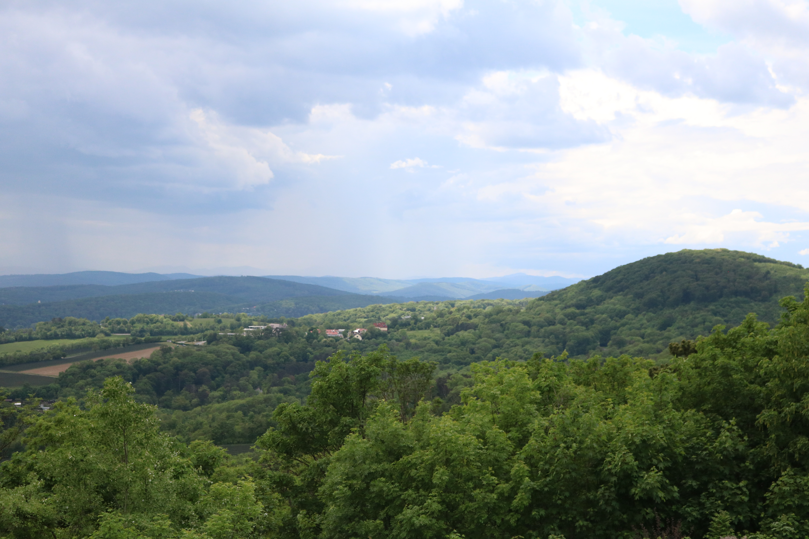
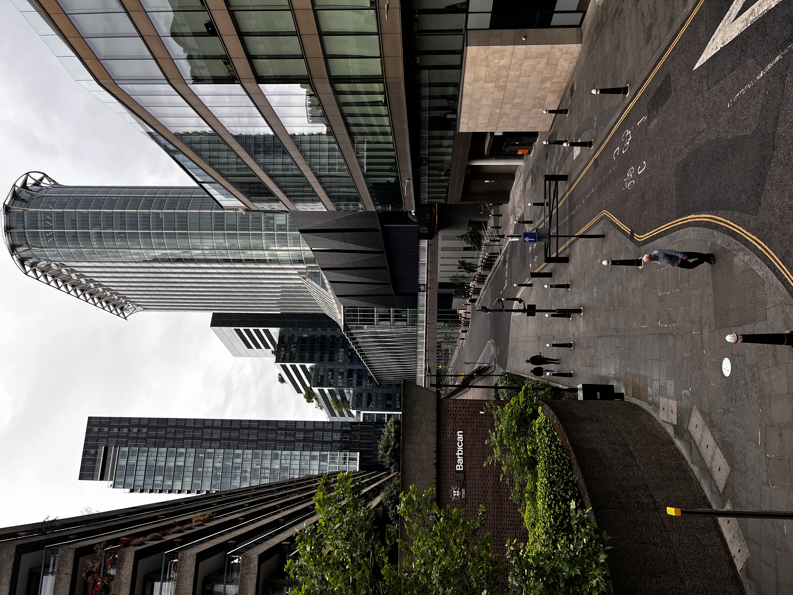

Collection
Landscape
Ridgelines at first light, valleys holding their fog. Walked more than driven, always back before breakfast.
View collectionPhotographs of weather, cities and quiet places — made slowly, kept only if they still feel like a letter.

Collection
Ridgelines at first light, valleys holding their fog. Walked more than driven, always back before breakfast.
View collection
Collection
View collection
Collection
Tables, windows, small evidence of somebody having just left the room.
View collectionAbout